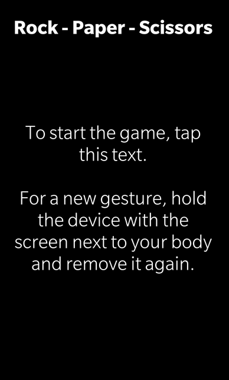

Toss Game Example
Files:
- sensors/tossgame/assets/main.qml
- sensors/tossgame/src/TossGame.cpp
- sensors/tossgame/src/TossGame.hpp
- sensors/tossgame/src/main.cpp
- sensors/tossgame/tossgame.pro
- sensors/tossgame/translations/tossgame.pro
Description
The Toss Game example demonstrates how to use sensors from the QtSensors module to trigger gesture switches in a simple rock-paper-scissors game.
 
Overview
In this example we'll learn how to use the QProximitySensor, QProximityFilter and QProximityReading classes to retrieve the close/not close status information from the proximity sensor of the device. We use these information to trigger the next round in a rock-paper-scissors game (we left our lizard and spock for simplicity here ;)).
The UI
The UI of this sample application consists of two screens. The first one is the intro screen that explains the game. The second one contains an ImageView that shows one of the three gestures: rock, paper or scissors.
The business logic of the application is encapsulated in the TossGame class which is made available to the UI under the name '_game'.
ImageView { horizontalAlignment: HorizontalAlignment.Left verticalAlignment: VerticalAlignment.Bottom imageSource: _game.gesture == TossGame.Rock ? "asset:///images/rock.png" : _game.gesture == TossGame.Paper ? "asset:///images/paper.png" : _game.gesture == TossGame.Scissors ? "asset:///images/scissors.png" : "" }
The image source of the ImageView is bound against the 'gesture' property of the TossGame object, so that the image is updated automatically whenever the 'gesture' property changes.
TossGame
The TossGame class encapsulates the business logic of the application. It contains a QProximitySensor object, which does the low-level communication with the proximity sensor of the device, and provides a property 'gesture' to make the a random gesture available to the UI. It inherits from QProximityFilter and reimplements the 'bool filter(QProximityReading*)' method to retrieve the sensor data from the QProximitySensor object.
class TossGame : public QObject, public QProximityFilter { Q_OBJECT // The property to access the current gesture Q_PROPERTY(Gesture gesture READ gesture NOTIFY gestureChanged) // The property to access the current activity status Q_PROPERTY(bool active READ active WRITE setActive NOTIFY activeChanged) public: // Describes the three possible gestures in the game enum Gesture { Rock, Paper, Scissors }; Q_ENUMS(Gesture); TossGame(QObject *parent = 0); Q_SIGNALS: // The change notification signals of the properties void gestureChanged(); void activeChanged(); protected: /** * This method is reimplemented from the QProximityFilter interface and is * called by the QProximitySensor whenever new values are available. */ bool filter(QProximityReading *reading); private: // The accessor methods for the properties Gesture gesture() const; bool active() const; void setActive(bool active); // The current gesture Gesture m_gesture; // Whether the sensor is currently active bool m_active; // Stores the previous close/non-close status of the proximity sensor bool m_close; // The proximity sensor QProximitySensor m_sensor; };
Inside the constructor we try to connect the QProximitySensor object to the hardware backend. If that's successful, we register the TossGame class as filter for the QProximitySensor object.
TossGame::TossGame(QObject *parent) : QObject(parent) , m_gesture(Rock) , m_active(false) , m_close(false) { // At first we have to connect to the sensor backend... if (!m_sensor.connectToBackend()) { qWarning() << "Cannot connect to proximity sensor backend!"; } // ... and then add a filter that will process the reported data m_sensor.addFilter(this); }
The 'bool filter(QProximityReading*)' method is called whenever the QProximitySensor object retrieved new data from the hardware sensor. Inside this method we check whether the close/non-close state has changed. If that's the case and the user just moved the device away from the body, we update the current gesture with a random new one.
bool TossGame::filter(QProximityReading *reading) { if (m_close != reading->close()) { // Only react if the state changed m_close = reading->close(); if (!m_close) { // If the user moves the device away from the body m_gesture = static_cast<Gesture>(qrand() % 3); emit gestureChanged(); } } // Do no further processing of the sensor data return false; }